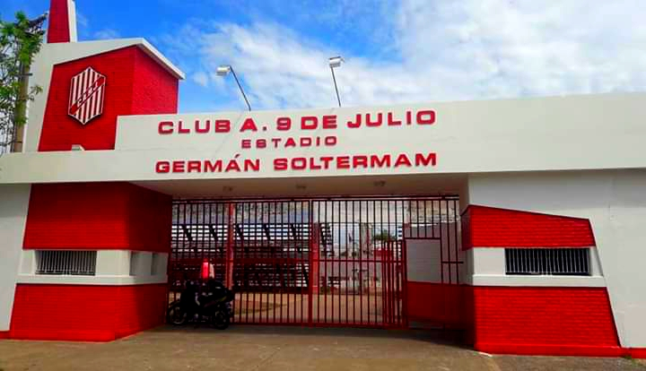

El Leon de Ayacucho
El Club Atlético 9 de Julio, también conocido como 9 de Julio de Rafaela, es un club de la ciudad de Rafaela en la provincia de Santa Fe. Fundado el 9 de julio de 1904 por tres jóvenes (Eduardo Tello, Luis Gunzinger y Atilio Scarazzini).
En fútbol milita desde 2023 en el Torneo Federal A, además de formar parte de la Liga Rafaelina de Fútbol.
Su clásico rival es Atlético de Rafaela, y además tiene una gran rivalidad con Ben Hur (R). Su estadio, denominado "Germán Solterman", posee una capacidad de 8000 personas y se ubica en la calle Ayacucho 309, entre Bolívar y Pellegrini.
